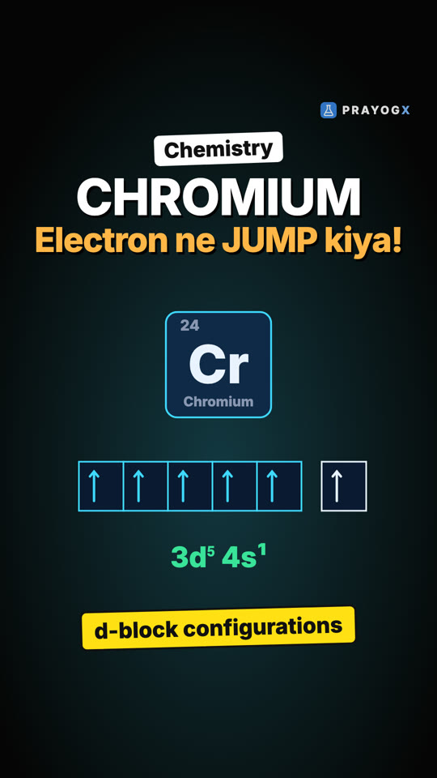
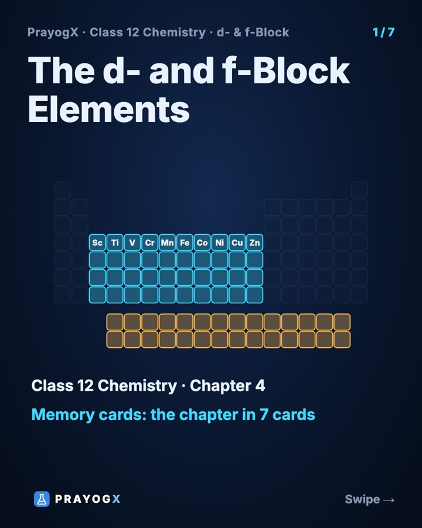
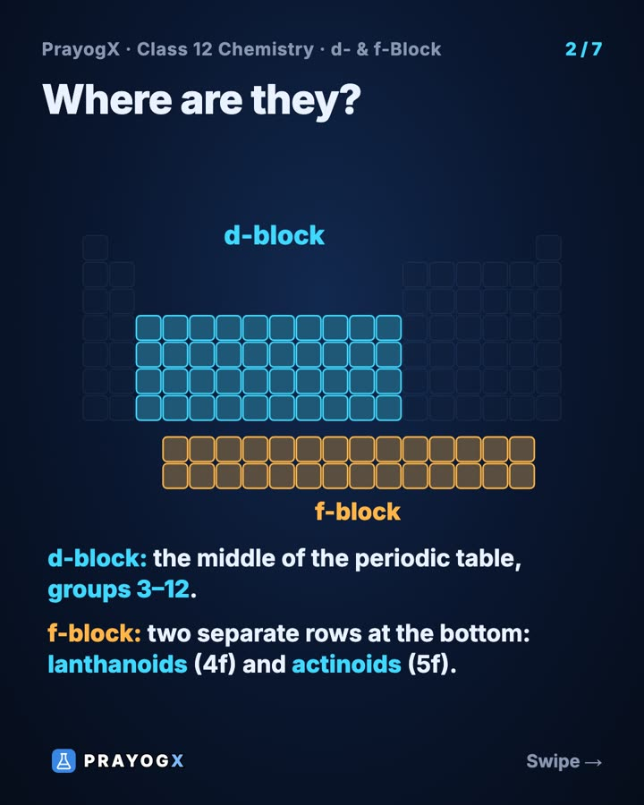
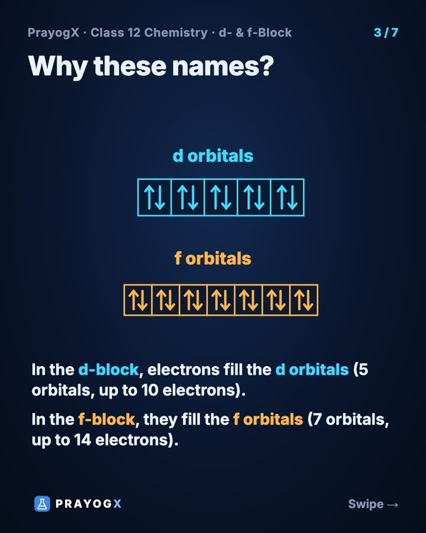
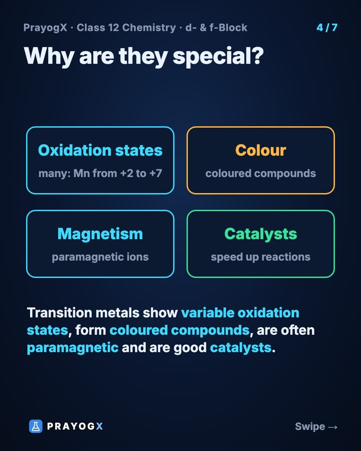
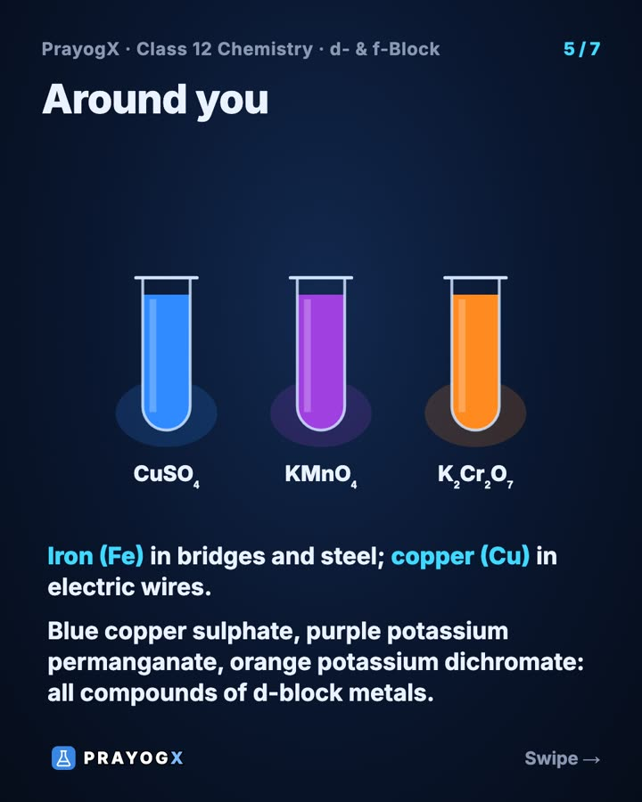
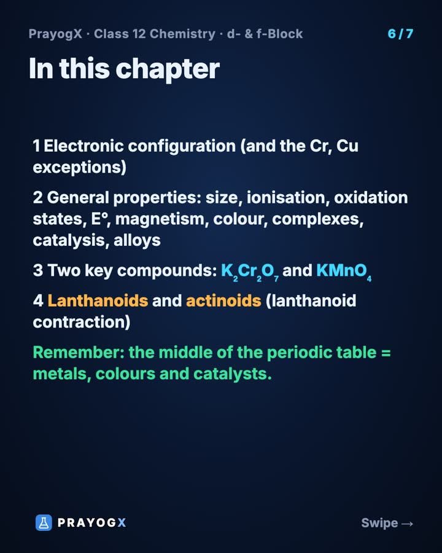
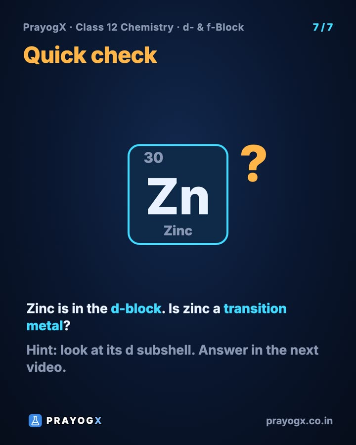

Chapter 4 · Chemistry
The d- and f-Block Elements: Chapter Introduction
Video not playing? YouTube
Iron bridges, copper wires and bright blue, purple and orange solutions all come from one part of the periodic table. The d-block (groups 3–12) fills d orbitals; the f-block (two rows below) fills f orbitals. Variable oxidation states, colour, magnetism and catalysis make them special.
Download the short notesPDF, 174 KB · solved examples, practice set and answer key Download the memory cards
PDF, 997 KB · 7 cards: the whole topic at a glance, for quick revision Download the workbook
PDF, 179 KB · fill in the blanks, true/false, assertion-reason, MCQ, numericals, short answer, match the columns; detailed solutions at the end Up next in this chapter

d-Block Configurations: Why Chromium and Copper Break the RuleThe d-block's general configuration is (n−1)d¹⁻¹⁰ ns¹⁻², with 4s filling before 3d. Chromium (3d⁵4s¹) and copper (3d¹⁰4s¹) move one 4s electron into 3d, because 3d and 4s are very close in energy and half-filled and full d sets are extra stable.ChemistryKey points
- d-block: the middle of the periodic table, groups 3–12; electrons fill the d orbitals (5 orbitals, up to 10 electrons).
- f-block: two separate rows at the bottom, the lanthanoids (4f) and actinoids (5f); electrons fill the f orbitals (7 orbitals, up to 14 electrons).
- Transition metals show variable oxidation states, form coloured compounds, are often paramagnetic and are good catalysts.
- Everyday examples: iron (steel, bridges), copper (wires), blue CuSO₄, purple KMnO₄, orange K₂Cr₂O₇.
Where the d- and f-blocks sit
| Block | Position | Orbitals filling | Series |
|---|---|---|---|
| d-block | groups 3–12 (middle) | (n−1)d | 3d, 4d, 5d, 6d |
| f-block | two rows at the bottom | (n−2)f | 4f lanthanoids, 5f actinoids |
The f-block is drawn separately so that the table stays compact: each f series has 14 elements.
Why they are special
- Variable oxidation states: manganese shows every state from +2 to +7.
- Coloured compounds: most transition-metal ions are coloured.
- Magnetism: many ions have unpaired electrons and are paramagnetic.
- Catalysts: iron in the Haber process, V₂O₅ in the contact process, nickel in hydrogenation.
- They also form complexes and alloys and have high melting points.
What this chapter covers
- Electronic configurations (and the Cr, Cu exceptions)
- General properties: size, ionisation enthalpy, oxidation states, E°, magnetism, colour, complexes, catalysis, interstitial compounds, alloys
- Two key compounds: K₂Cr₂O₇ and KMnO₄
- The lanthanoids (lanthanoid contraction) and the actinoids
Memory cards
Swipe through the 7 cards to revise this topic in a minute.







PDF, 997 KB · 7 cards: the whole topic at a glance, for quick revision
Quick quiz
5 questions. Choose an answer for each, then submit to see your score and the explanations.